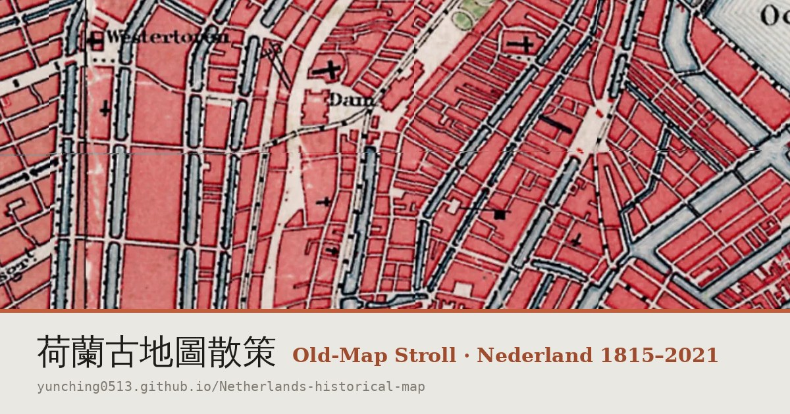

Oude-Kaart Wandeling door Nederland · 荷蘭古地圖散策 — https://yunching0513.github.io/Netherlands-historical-map/

Een gratis web-app waarmee je door 21 Nederlandse steden wandelt met de historische Topotijdreis-kaarten van het Kadaster (1815–2021) onder je voeten: schuif tussen toen en nu, zie hoe de stad groeide, ontdek gotische kathedralen tot Amsterdamse School en De Stijl, en neem je wandeling op met GPS. Werkt als PWA, ook offline voor veel steden. Gemaakt door een individuele onderzoeker uit Taiwan, volledig open (MIT-code; kaartdata CC BY 4.0 © Kadaster).
A free web app for walking 21 Dutch cities with Kadaster's historical Topotijdreis maps (1815–2021) under your feet: swipe between then and now, watch each city grow, explore architecture from Gothic cathedrals to the Amsterdam School and De Stijl, and record your walk by GPS. Installable PWA with offline tiles for many cities. Built by an independent researcher from Taiwan; fully open (MIT code; map data CC BY 4.0 © Kadaster). Each landmark and city has its own citable page.
免費網頁 App，帶你踏著荷蘭地籍局（Kadaster）Topotijdreis 歷史地圖（1815–2021）漫步 21 座荷蘭城市：滑動比較古今、看城市如何生長、探索從哥德式大教堂到阿姆斯特丹學派與風格派的建築，並以 GPS 記錄散策。可安裝為 PWA，多數城市支援離線。由來自台灣的獨立研究者開發，完全開放（程式碼 MIT；地圖資料 CC BY 4.0 © Kadaster）。
Kaarten: © Kadaster, CC BY 4.0 (Topotijdreis / PDOK). Afbeeldingen: uitsluitend CC0, Public Domain of CC-BY via Wikimedia Commons, per afbeelding vermeld op credits. Screenshots en assets/og/*.jpg mogen met bronvermelding vrij gebruikt worden door pers.
Maps: © Kadaster, CC BY 4.0. Images: CC0 / Public Domain / CC-BY via Wikimedia Commons, credited individually. Press may reuse screenshots and the per-city share images with attribution.